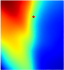
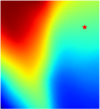

Machine Learning Researcher · Salt Lake City, UT
Madison Cooley
I build and evaluate machine learning models for science and engineering. I’m especially interested in how to choose a model for a particular problem and how to tell whether it works.
During my Ph.D. in Computing at the University of Utah, I developed models for physical systems, built simulation datasets, and wrote software to train and test new methods.
I’m based in Salt Lake City and looking for industry roles in machine learning research, applied science, and data science.

Featured research · TMLR 2026
Learning where to specialize
How does a chemical concentration evolve when reactions occur on only one side of a domain? I led the development of a neural operator that learns where local experts should specialize and how to blend their predictions.
Where each expert has the most influence


- 2
- 3
- 4
- 5
- 6
View individual expert weights





Each map has its own weight scale. Warmer colors indicate higher weight within that map, and the endpoints are approximate. View the original Figure 9 maps.

Skills in practice
Choose a category to see the skills I’ve used and the projects where I used them.